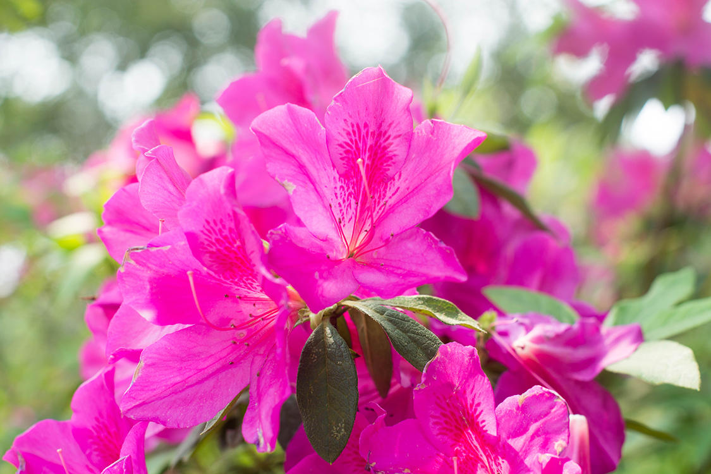
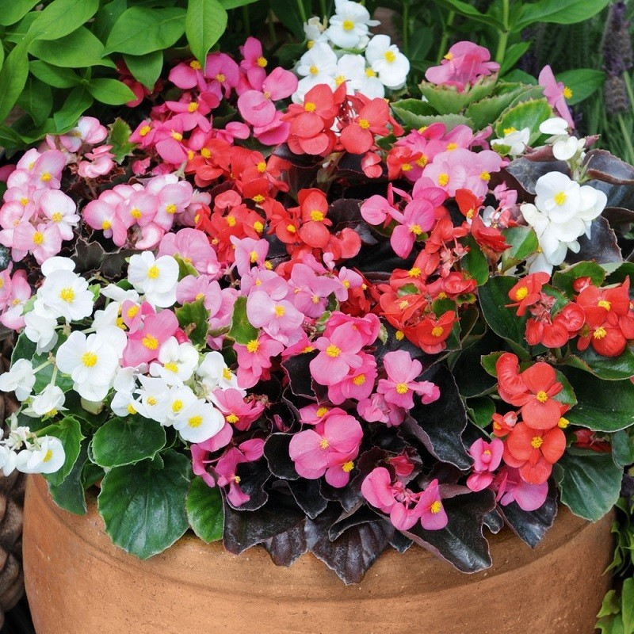

5 plantas que purificam o ar da sua casa e a deixam mais bonita
O uso de plantas naturais na decoração de casa vai além da questão de estilo e beleza, as plantas além de trazerem frescor pelas suas cores também tem a capacidade de purificar o ar.
1 - Gérbera(Gerbera jamesonii)

(Uma boa pedida para o quarto, ajuda a combater a insônia.) Esta plantinha linda é ótima para remover tricloroetileno (encontrado em produtos para roupa) e benzeno do ar. Além disso, ela precisa de bastante sol. Embora também possa sobreviver muito bem às épocas mais frias. Acima de tudo, ela é uma das preferidas dos decoradores, pois purifica o ar e e ficam lindas em ambientes internos e externos.
2 - Azaleia
A azaleia é um lindo arbusto quando florido, que gosta de sol, porém de temperaturas amenas. Filtra muito bem formaldeídos presentes no ar. Multiplica-se por estacas-ponteiro, plantadas sobre proteção de estruturas. As flores são variadamente coloridas, brancas, vermelhas, arroxeadas, róseas, simples ou dobradas, não raro listradas, surgidas no outono-inverno. São intensamente cultivadas em vasos, bordaduras, em maciços ou grupos, mantidos podados ou não. A poda somente pode ser feita após o período de florescimento. Apreciam solos ácidos e com boa fertilidade.
3 - Palmeira ráfia (Rhapis excelsa)

(É muito usada para decoração de interiores, mas no Brasil também é amplamente usada em jardins) De longe uma das plantas mais fáceis e mais bonitas de se ter dentro de casa. De fácil manutenção é ótima para filtrar amônia, presente em materiais de limpeza, tecidos e tintas para cabelo. Ela é uma espécia de arvorezinha, que demora um pouquinho a tomar forma, mas uma vez passada essa fase, suas folhas irão se tornar decoração permanente para sua casa. Multiplica-se principalmente por divisão de touceira, plantadas na primavera. É adequada para cultivo em vasos destinados a interiores iluminados, para o cultivo em touceiras isoladas ou formando grupos, a pleno sol ou meia-sombra, com terra fertilizada. Não tolera geadas.
4 - Lírio da paz (Spathiphyllum wallisii Regel)

Essa é uma das poucas plantas que servem como purificadoras de ar e que têm flor. Portanto, ela é ótima para decoração! Não exige muita manutenção e multiplica-se facilmente pelas numerosas mudas que se formam junto à planta original, as quais podem ser separadas da planta-mãe em qualquer época. Ela é cultivada a meia-sombra em vasos, em canteiros, formando conjuntos isolados, ou em bordaduras e beira de muros, em terra rica em composto orgânico, com boa drenagem e irrigada periodicamente. Não tolera temperaturas baixas, sendo recomendada apenas para regiões tropicais e subtropicais. Contudo, vale lembrar que é uma planta venenosa. Assim, é preciso tomar cuidado se tem bichinhos de estimação ou mãozinhas muito curiosas em casa!
5 - Begônia-cerosa (Begonia coccinea)
(As begônias são um charme para para se cultivar em casa.) Com flores brancas, róseas ou vermelhas, essa planta tirar do ar benzeno e produtos químicos a base de tolueno. Além disso, ela é cultivada a pleno sol ou a meia-sombra, em grupos formando bordaduras ou maciços isolados. Sobretudo, deve ser plantada em baldes, e a terra deve ser fértil e rica em matéria orgânica e com boa drenagem. Por fim, ela gosta de frio.